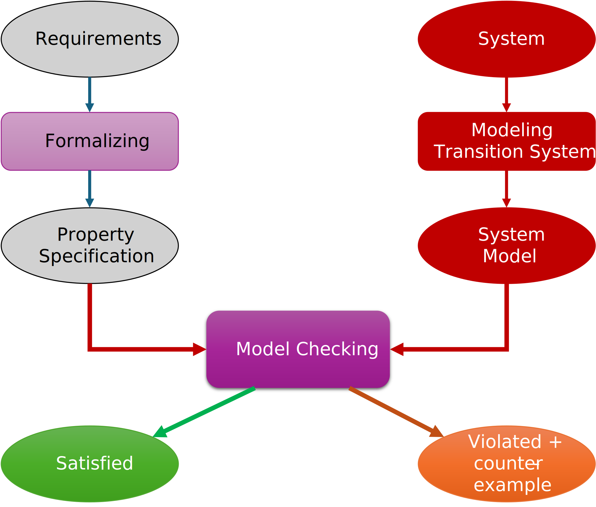
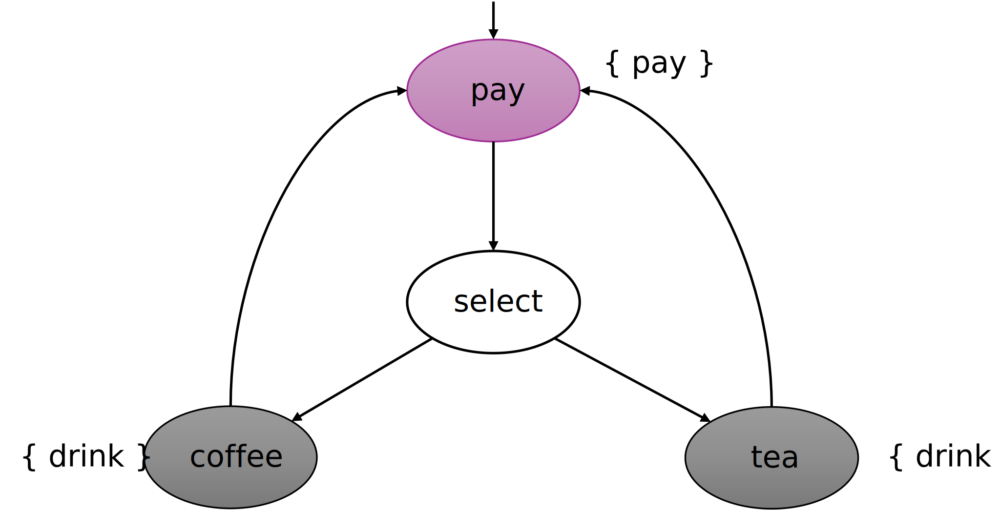
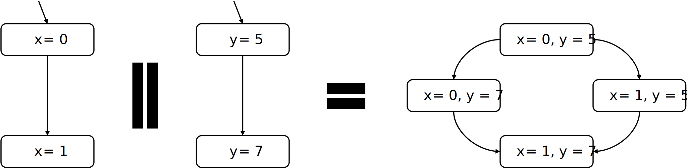
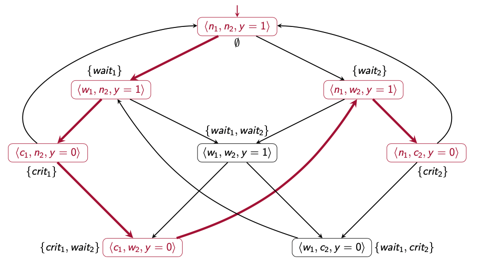
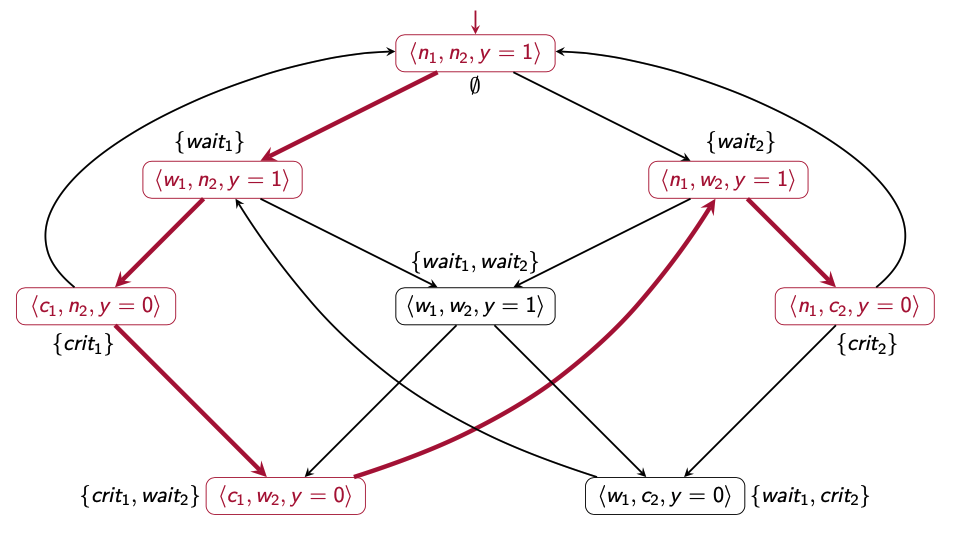

Conception et vérification
de systèmes critiques
Introduction aux méthodes formelles
2A Cursus Ingénieurs
- ST5 : Modélisation fonctionnelle et régulation
CentraleSupelec - Université Paris-Saclay - 2025/2026
CentraleSupelec - Université Paris-Saclay - 2025/2026

Fiabilité des systèmes de contrôle
- Un système de contrôle est composé de 3 parties :
- Capteurs
- Actionneurs
- Logiciel de contrôle qui est critique dans le contexte d'un système critique!

Logiciel critique $\to$ pour lequel une défaillance peut être catastrophique
- mortelle ou/et extrêmement coûteuse
Quelques défaillances spectaculaires de logiciels critiques :
- Crash of Ariane 5
- LASCAD : Crash of London Ambulance CAD service
- Therac-25 : 7 deaths of cancer patients due to overdoses of radiation
Solutions
- Les règles et les techniques de programmation.
- Le support des langages de programmation.
- Les méthodologies de conception
et de développement. - Le test.
-
Les méthodes formelles
- méthodes d'ingénierie basées sur
des approches mathématiques utilisées pour développer
et analyser des systèmes (logiciels). démarche globale (langages et outils .
de vérification)
- méthodes d'ingénierie basées sur
des approches mathématiques utilisées pour développer

spécification, conception
et vérification
-
La spécification formelle $\to$ description rigoureuse et non ambiguë
du comportement attendu d'un système (logiciel).- modèle mathématique décrivant ce que doit faire le système (logiciel).
- modélisation par un langage mathématique (syntaxe, logique, sémantique...).
-
La conception formelle $\to$ description rigoureuse et non ambiguë
de la réalisation du système (logiciel).- modèle mathématique décrivant la construction du système (logiciel).
- modélisation par un langage mathématique (syntaxe, logique, sémantique...).
- La Vérification formelle $\to$ démontrer mathématiquement qu'un système (logiciel)
respecte les exigences identifiées dans la spécification.
- démonstration que la conception correspond bien à la spécification.
- simulation, preuve de théorèmes, model checking...
Vérification du logiciel de contrôle
Le processus de vérification
- Prendre le logiciel (Conception)
- Déterminer ce que le logiciel est censé faire (Spécification)
- Démontrer que le logiciel fait ce qu'il est censé faire (Vérification)
Imposée par les organismes de certification ($\Longrightarrow$ quelques examples)
Test vs Verification
- Les tests sont une technique dynamique courante où le système est exécuté
- Procédure de test :
- prendre une implémentation du système
- la stimuler avec certaines données en entrée (les cas de tests)
- observer la réaction et vérifier si elle est "souhaitable"
Inconvénients des tests :- le
nombre de cas possibles est très important (voire infini) - les
comportements inexplorés peuvent contenir un bug fatal - les tests privilégient
les scénarios les plus probables
- le
- Les tests peuvent prouver la présence d'erreurs, et non leur absence !
- La vérification prouve l'absence d'erreurs (ou les trouve)
La nécissité des méthodes formelles
$\Longrightarrow$ les slides de la présentation de la ST58
Definition
d'un programme séquentiel
- Une séquence d'instructions qui se termine et dont le résultat est calculé
à partir des données initiales (les entrées) -
Exemple $\to$ programme de tri
- Initial data : Array $T$ of size $N$
- Result : Sorted Array $T$ of size $N$
Vérification formelle
des programmes séquentiels
Définitions
- PreCondition $\to$ propriété satisfaite par les données initiales du programme avant l'exécution des instructions
- PostCondition $\to$ propriété satisfaite par le résultat et les variables
du programme après l'exécution des instructions
- Prouver que si la PreCondition est satisfaite, alors la PostCondition
est satisfaite $\Rightarrow$ trouver la PreCondition qui permet d'aboutir à la PostCondition - Exemple $\to$ programme de tri
- Initial data : Array $T$ of size $N$
- Result : Sorted Array $T$ of size $N$
- Post-Condition : $ ~~~~~~~~~~~~~~~~~~~~~~\forall n,m \in [1..N],~n < m \Longrightarrow T[n] \leq T[m]$
- Pre-Condition : True (nothing)
- Exemple $\to$ programme de tri
- Initial data : Array $T$ of size $N$
- Result : Sorted Array $T$ of size $N$
- Post-Condition : $ ~~~~~~~~~~~~~~~~~~~~~~\forall n,m \in [1..N],~n < m \Longrightarrow T[n] < T[m]$
- Pre-Condition : $\forall n,m \in [1..N],~n \neq m \Longrightarrow T[n] \neq T[m]$
Vérification formelle
des programmes séquentiels
Spécification $\to$ programme de tri
- Initial data : Array $T$ of size $N$
- Result : Sorted Array $T$ of size $N$
- Post-Condition : $ ~~~~~~~~~~~~~~~~~~~~~~~~~~~~~~~~~~~~~ \forall n,m \in [1..N],~n < m \Longrightarrow T[n] < T[m]$
- Pre-Condition : $\forall n,m \in [1..N],~n \neq m \Longrightarrow T[n] \neq T[m]$
Conception $\to$ programme de tri
input T : array [N] of integer
for i=0 to N-1 do
for j=0 to N-i-1 do
if T[j] > T[j + 1] do
T[j], T[j + 1] = T[j + 1], T[j]
end
end
end
Vérification formelle
des programmes séquentiels
Spécification $\to$ programme de tri
- Initial data : Array $T$ of size $N$
- Result : Sorted Array $T$ of size $N$
- Post-Condition : $ ~~~~~~~~~~~~~~~~~~~~~~~~~~~~~~~~~~~~~ \forall n,m \in [1..N],~n < m \Longrightarrow T[n] < T[m]$
- Pre-Condition : $\forall n,m \in [1..N],~n \neq m \Longrightarrow T[n] \neq T[m]$
Implémentation $\to$ programme de tri
Question ?
Spécification $\to$ programme de tri
- Post-Condition : $ ~~~~~~~~~~~~~~~~~~~~~~~~~~~~~~~~~~~~~ \forall n,m \in [1..N],~n < m \Longrightarrow T[n] < T[m]$
- Pre-Condition : $\forall n,m \in [1..N],~n \neq m \Longrightarrow T[n] \neq T[m]$
Conception $\to$ programme de tri
input T : array [N] of integer
for i=0 to N-1 do
for j=0 to N-i-2 do
if T[j] > T[j + 1] do
T[j], T[j + 1] = T[j + 1], T[j]
end
end
end
$\Rightarrow$ Prouver que si la PreCondition est satisfaite, alors la PostCondition est satisfaite
Le système de preuve de Hoare
- Le système de preuve de Hoare fournit pour chaque type d'instruction une règle pour trouver la PreCondition la plus générale $P$ (la forme générale : {$P$}$~I~${$Q$} )
-
Le triplet {$P$}$~I~${$Q$} exprime la propriété suivante :
- Si $P$ (PreCondition) est vérifiée avant l'exécution de $I$,
- alors $Q$ (PostCondition) est vérifiée après son exécution.
-
Une règle de Hoare est constituée :
- d'hypothèses $H_1, ..., H_n$
- d'une conclusion $C$
Le système de preuve de Hoare
La règle de la séquence
$$ \frac{\{P\}~I~\{R\}~~~~~~~~\{R\}~J~\{Q\}}{\{P\}~I~;~J~\{Q\}} $$
$$ \frac{\{x>0\}~x:=x+1~\{x>1\}~~~~~~~~\{x>1\}~y:=2*x~\{y>2\}}{\{x>0\}~x:=x+1~;~y:=2*x~\{y>2\}} $$
Le système de preuve de Hoare
La règle de la conditionnelle
$$ \frac{\{P \land C\}~I~\{Q\}~~~~~~~~\{P \land \neg C\}~J~\{Q\}}{\{P\}~\text{if}~C~\text{then}~I~\text{else}~J~\{Q\}} $$
$$ \frac{\{true \land y \geq 0\}~x := y~\{x \geq 0\}~~~~~~~~\{true \land \neg (y \geq 0)\}~x := 0~\{x \geq 0\}}{\{true\}~\text{if}~y \geq 0~\text{then}~x := y~\text{else}~x := 0~\{x \geq 0\}} $$
Le système de preuve de Hoare
La règle de la boucle
$$ \frac{\{P \land C\}~I~\{P\}}{\{P\}~\text{while}~C~\text{do}~I~\{P \land \neg C\}} $$
$$
\frac{~~~~
\frac{~~~~}
{~~~~}
}
{\{x \leq b\}~\text{while}~x < b~\text{do}~x := x + 1~\{x = b\}}
$$
$$
\frac{~~~~
\frac{~~~~}
{\{x \leq b\}~\text{while}~x < b~\text{do}~x := x + 1~\{x \leq b \land x \geq b\}~~~~~( x \leq b \land x \geq b ~\Rightarrow~ x = b)}
}
{\{x \leq b\}~\text{while}~x < b~\text{do}~x := x + 1~\{x = b\}}
$$
$$
\frac{
\frac{\{x \leq b \land x < b\}~x := x + 1~\{x \leq b\}}
{\{x \leq b\}~\text{while}~x < b~\text{do}~x := x + 1~\{x \leq b \land x \geq b\}}
}
{\{x \leq b\}~\text{while}~x < b~\text{do}~x := x + 1~\{x = b\}}
$$
Le système de preuve de Hoare
La règle de l'affectation
$$
\frac{}{\{Q[ x \gets E]\}~x := E~\{Q\} }
$$
Raisonnement arrière $\to$ pourque $Q$ soit vraie après cette affectation,
il faut qu'elle soit déjà vraie pour la valeur que va prendre $x$.
il faut qu'elle soit déjà vraie pour la valeur que va prendre $x$.
$$
\frac{}{\{~~~~~~~~~~~~~~~~\}~x := x + 2~\{x > 2\} }
$$
$$
\frac{}{\{x + 2 > 2\}~x := x + 2~\{x > 2\} }
$$
Le système de preuve de Hoare
Les Règles logiques
$$ \frac{P \Rightarrow P'~~~~~~~~ \{P'\}~I~\{Q'\} ~~~~~~~~ Q' \Rightarrow Q}{\{P\}~I~\{Q\}} $$
$$ \frac{\{true \land y \geq 0\}~x := y~\{x \geq 0\}~~~~~~~~\{true \land \neg (y \geq 0)\}~x := 0~\{x \geq 0\}}{\{true\}~\text{if}~y \geq 0~\text{then}~x := y~\text{else}~x := 0~\{x \geq 0\}} $$
$$
\frac{
\{true \land y \geq 0\} \Rightarrow \{y \geq 0\} ~~~~~~~\{y \geq 0\}~x := y~\{x \geq 0\}
}
{
\{true \land y \geq 0\}~x := y~\{x \geq 0\}
}
$$
$$
\frac{
\{true \land \neg(y \geq 0)\} \Rightarrow \{0 \geq 0\} ~~~~~~~\{0 \geq 0\}~x := 0~\{x \geq 0\}
}
{
\{true \land \neg(y \geq 0)\}~x := 0~\{x \geq 0\}
}
$$
La logique du premier ordre (FOL)
- La preuve du programme est basée sur le système formel
de la logique du premier ordre (FOL)- PreConditions, PostConditions, Invariants, Assertions $\ldots$
- FOL est la logique que vous avez l'habitude d'utiliser en mathématiques
- La syntaxe :
$t~~ ::= ~~c ~~|~~ x ~~ | ~~ f(t,\ldots,t) $
$\phi~~ ::= ~~ true ~~ | ~~a ~~ | ~~ t~ = ~t ~~|~~ P(t,\ldots,t) ~~ | ~~ \phi ~ \wedge ~ \phi ~~ | ~~ \neg~\phi ~~ |~~ \exists x.~\phi~$ - La sémantique est l'interprétation habituelle utilisée en mathématiques
Le système de preuve de Hoare
En pratique ...
Le système de Hoare est complexe à utiliser :
- règles lourdes à appliquer
- taille des arbres de preuve
- mieux adapté à une preuve automatisée (ex. Méthode B)
Histoire des méthodes
de vérification formelle
Avant $\ldots$
- Le code du logiciel était séquentiel
- Les propriétés sont exprimées en utilisant la logique du premier ordre
- La preuve de théorème : ex. la méthode B
- Difficilement automatisé : semi-décidable
Après les années 80
- Le logiciel est concurrent et réactif
- Les propriétés sont exprimées en logique temporelle
- Démontrer des propriétés telles que la sécurité, la vivacité et l'équité $\ldots$
- ex. Model Checking
- Méthodes automatisées : décidable
La formalisation de la vérification
d'un modèle
La forme formelle du problème de vérification est $M \models^? \varphi$ avec:
- $M$ est la représentation formelle du système observé
- $\varphi$ est la représentation formelle de la propriété à vérifier
Principe du Model-Checking

Principe du Model-Checking

Systèmes de transition
- modèle pour décrire le comportement des systèmes
- digraphes où les nœuds représentent les états
et les arêtes représentent
les transitions -
états :
- la couleur actuelle d'un feu de circulation : rouge, vert, orange.
- software : les valeurs actuelles de toutes les variables du programme...
- hardware : la valeur actuelle des registres ainsi que les valeurs des bits d'entrée
-
transitions : ("changement d'états")
- un passage d'une couleur à une autre
- software : l'exécution d'une instruction de programme
- hardware : le changement des registres et des bits de sortie pour une nouvelle entrée
Systèmes de transition
La définition formelle
-
Un systèmes de transition $TS$ est un tuple $(S, \delta, I, AP, \mathcal{L})$ avec :
- $S$ est un ensemble d'états
- $\delta \subseteq S \times S$ est une relation de transition
Notation: $s \rightarrow s'$ au lieu de $(s,s') \in \delta$ - $I \subseteq S$ est un ensemble d'états initiaux
- $AP$ est un ensemble de propositions atomiques
- $\mathcal{L} : S \longrightarrow 2^{AP}$ est une fonction d'étiquetage
Systèmes de transition
Example

- Ensemble d'états : $S = \{\text{pay}, \text{select}, \text{tea}, \text{coffee}\}$
- Les états initiaux : $I= \{\text{pay}\}$
- Les propositions atomiques, La fonction d'étiquetage :
- cas 1: $AP = S$, $\mathcal{L}(s)=\{s\}$
-
cas 2: $AP = \{\text{pay}, \text{drink}\}$, $~~~~~~~~\mathcal{L}(\text{tea})=\mathcal{L}(\text{coffee})=\{\text{drink}\}$
$\mathcal{L}(\text{pay})=\{\text{pay}\}$, $~~~\mathcal{L}(\text{select}) = \emptyset$
Des langages de programmation
aux systèmes de transition

- Les systèmes de transition sont un langage de modélisation élémentaire
- décrit tous les états que le système peut atteindre
- décrit le comportement du système (transitions)
- Même un système de base peut avoir des milliers d’états !
int i=0; while(i<1000) i++; - la modélisation peut être fastidieuse !
- Et si le système de transition était généré automatiquement
à partir du programme du système ?- la modélisation serait automatique !
- de nombreux outils existent, de C, Java $\ldots$ à TS
Déterminisme et non-déterminisme
- Soit $TS = (S, \delta, I, AP, \mathcal{L})$ un système de transition, $TS$ est déterministe
- iff $~~~\forall~s,s'_1,s'_2 \in S,$ $s \rightarrow s'_1, s \rightarrow s'_2 \in \delta \Rightarrow s'_1 = s'_2$
- iff $~~~\forall~s \in S,$ $\#(\delta(s)) \le 1$

Sources du non-déterminisme
- Informations incomplètes sur l'environnement du système
- Sélection de l'utilisateur
- Événements déclenchés
Entrelacement
de systèmes concurrents
- le système est composé de nombreux composants concurrents
- un système de transition pour modéliser le comportement d'un composant
- ex. le threading, les algorithmes distribués et les protocoles de communication
Principe d'entrelacement
- Les actions des composants indépendants sont entrelacées
- un seul processeur est disponible
- sur lequel chaque composant s'exécute pendant un quantum de temps
- Aucune hypothèse n'est faite sur l'ordre des exécutions
- ordres possibles pour des composants indépendants infinis
$Loop(P) \parallel Loop(Q)$: $$ \begin{aligned} P~~ Q~~ P~~ Q~~ P~~ Q~~ P~~ Q~~ P~~ Q \ldots\\ P~~ P~~ Q~~ P~~ P~~ Q~~ P~~ P~~ Q~~ P \ldots\\ P~~ Q~~ P~~ P~~ Q~~ P~~ P~~ P~~ Q~~ P \ldots\\ \end{aligned} $$
- ordres possibles pour des composants indépendants infinis
source principale de non-déterminisme qui peut être évitée en ajoutant
un ordonnanceur avec une stratégie particulière
un ordonnanceur avec une stratégie particulière
Principe d'entrelacement
Exemple d'entrelacement

L'entrelacement $~~~~TS_1 \parallel TS_2$
Définition formelle
Soient $~~TS_i = (S_i, \delta_i, I_i, AP_i, \mathcal{L}_i), i=1,2~~$ deux systèmes de transition.
Le produit entrelacé (produit asynchrone) est le système de transition :
$$TS_1 \parallel TS_2 = (S_1 \times S_2, \delta, I_1 \times I_2, AP_1 \cup AP_2, \mathcal{L}) $$
où $\delta$ vérifie :
$$
\frac{s_1 \longrightarrow s'_1}
{\langle s_1,s_2 \rangle \longrightarrow \langle s'_1,s_2\rangle}
~~~and~~~
\frac{s_2 \longrightarrow s'_2}
{\langle s_1, s_2 \rangle \longrightarrow \langle s_1,s'_2\rangle}
$$
et $\mathcal{L}$ vérifie :
$$
\mathcal{L}(\langle s_1,s_2\rangle) = \mathcal{L}_1(s_1) \cup \mathcal{L}_2(s_2)
$$
Exclusion mutuelle basée
sur les sémaphores

$y=0$ signifie "le verrou est actuellement possédé";
$y=1$ signifie "le verrou est libre"
Produit d'entrelacement

$n_i$ : $noncrit_i$, $w_i$ : $wait_i$, $c_i$ : $crit_i$
Source typique d'explosion d'état $ \to$ supposons qu'il y ait 3 composants concurrents
Chemins et états atteignables
- Un fragment de chemin infini $\pi$ est une séquence d'états infinie :
$\pi = s_0 s_1 s_2\ldots~$ tel que $\forall i \geq 0, s_i \longrightarrow s_{i+1} \in \delta$ - $Paths(s)$ est l'ensemble des fragments de chemin infinis $\pi$ avec $first(\pi) = s$
- $Paths(TS) =\underset{s \in I}{\cup} Paths(s)$ est l'ensemble des fragments de chemin initiaux
- Un état $s \in S$ est dit accessible dans $TS$ s'il existe un fragment de chemin initial $\pi$ tel que $$ \pi = s_0 s_1 \ldots s_{n-1} (s_n = s) s_{n+1} \ldots \in Paths(TS) $$
- $Reach(TS)$ désigne l'ensemble de tous les états atteignables dans $TS$
Revenons à notre exemple

$Paths(\langle c_1, w_2, y=0\rangle) = $ ?
$Paths(TS) = $ ?
$Reach(TS) = $ ?
$Paths(TS) = $ ?
$Reach(TS) = $ ?
Traces
- Les états sont observables à travers leurs propositions atomiques
- Les traces se concentrent uniquement sur l'ensemble des propositions atomiques qui sont valides le long du chemin d'exécution
-
La trace du chemin $\pi = s_0 s_1 s_2\ldots$ $\in S^{\omega}$ avec $\mathcal{L} : S \longrightarrow 2^{AP}$
- $trace(\pi) = \mathcal{L}(s_0) \mathcal{L}(s_1) \mathcal{L}(s_2)\ldots$ $\in (2^{AP})^{\omega}$
- Les traces sont des mots infinis sur l'alphabet $2^{AP}$
-
$trace(\Pi) = \{trace(\pi) | \pi \in \Pi\}$, $~~~~~~~~~~~~~$ $Traces(s) = trace(Paths(s))$
$~~~~~~~~~~~~~~~~~~~~~~~~~~~~$ et $ ~~~Traces(TS) = \underset{s \in I}{\cup} Traces(s)$
Revenons à notre exemple
Soit $AP = \{wait_1, crit_1, wait_2, crit_2\}$
 

$Trace(\pi\dots) = \emptyset \{wait_1\} \{crit_1\} \{crit_1,wait_2\} \{wait_2\} \{crit_2\}\dots$